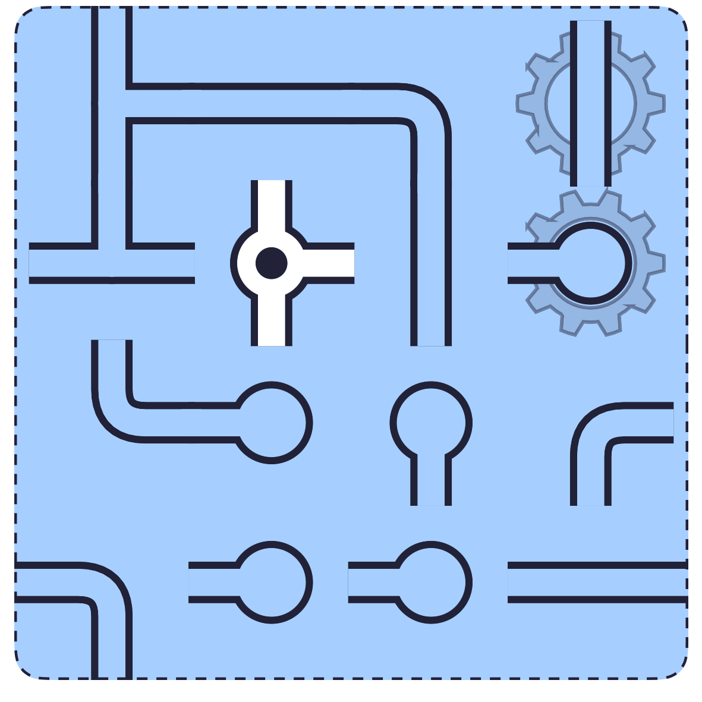
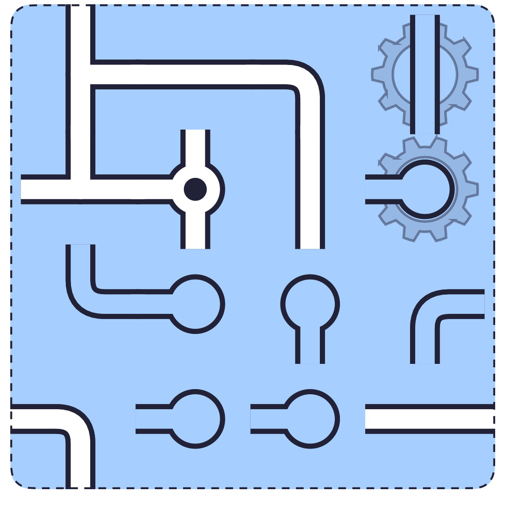
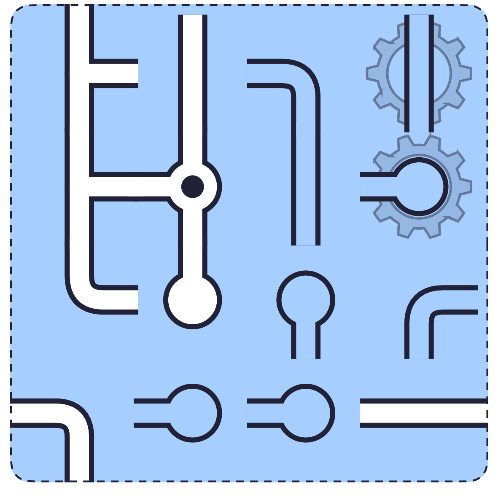
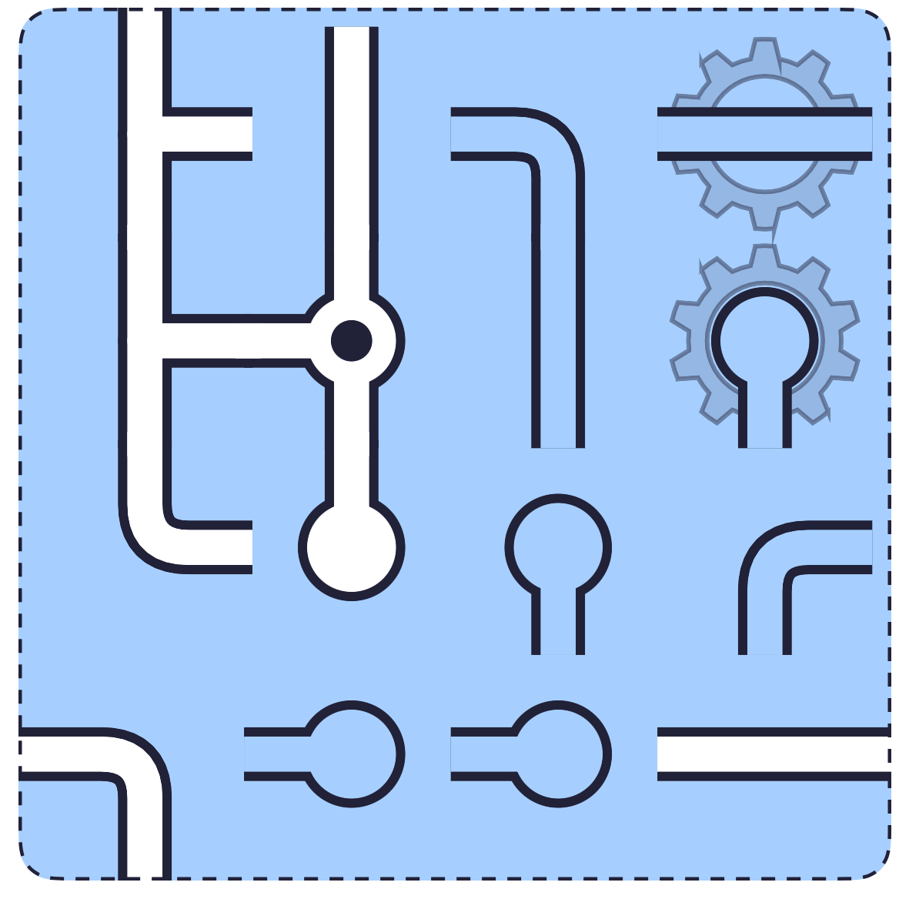
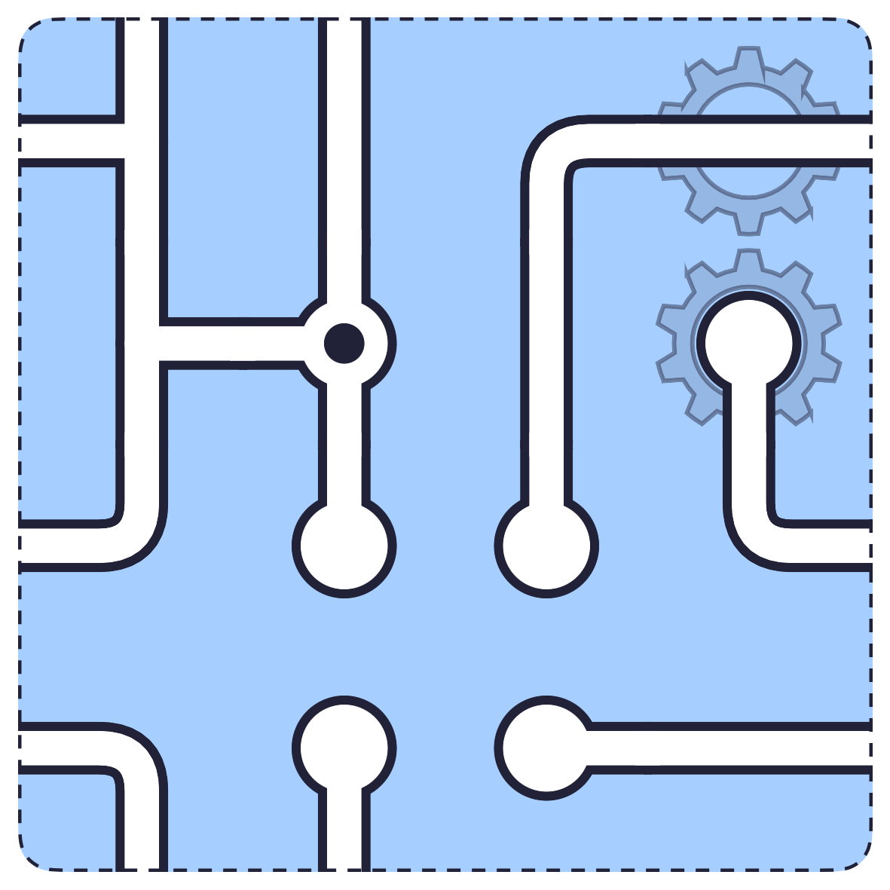

How to play Gearworks Pipes.
Gearworks is Pipes with two changes. The edges connect, so a pipe leaving the right side comes back in on the left. And some pieces wear gears: tap one and its partner turns with it.
The board.
A 4 by 4 board with a dashed frame: that means the edges wrap. Two pieces in the top-right corner carry gears. The source is the piece with the dot, near the middle.

The rules.
An opening that points off the board is not a leak any more; it is a connection to the far side, and it needs a matching opening over there.
Start at the source, mind the wrap.
Follow the water outward as usual. When a wet piece opens toward an edge, look at the piece on the opposite edge of that row or column: it has to open back.


The gears.
Tapping a geared piece turns its partner by the same quarter turn. You cannot set one without the other, so find a turn that lands both of them right at once.


Common questions.
Can the water wrap more than once?
Yes. Any row or column can connect across its edges. The dashed frame applies to the whole board.
What if the gears are stuck one turn apart?
Then a piece somewhere else is wrong. On a well-set board the geared pair always has a shared turn that fits both.